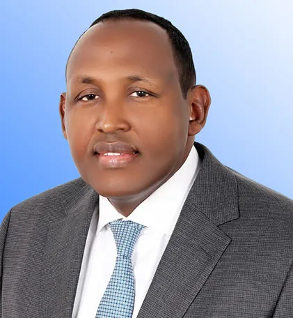

Abdirisak M Aden
Founder & Chief Executive Officer
Abdirisak has over 15 years experience in strategic public affairs, communications, lobbying and monitoring and evaluation projects. He served as Senior Communication Adviser to the former President of Somalia and was the Permanent Secretary at the Ministry of Information, Somalia. He has also served in the Somali Prime Minister’s Office.
Abdirisak holds a BA in Politics and International Relations from the University of the West of England and Stockholm University. He has a certificate from the Annenberg-Oxford Summer Institute Seminar on Global Media Policy and Comparative Media Law, Strategic Communications, and a School Management Certificate from the Swedish School Agency and School Leadership University.